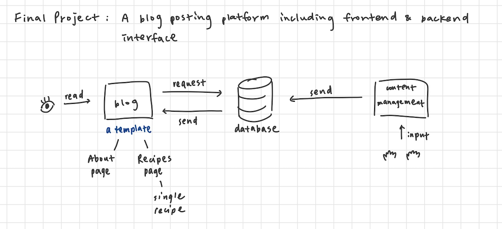
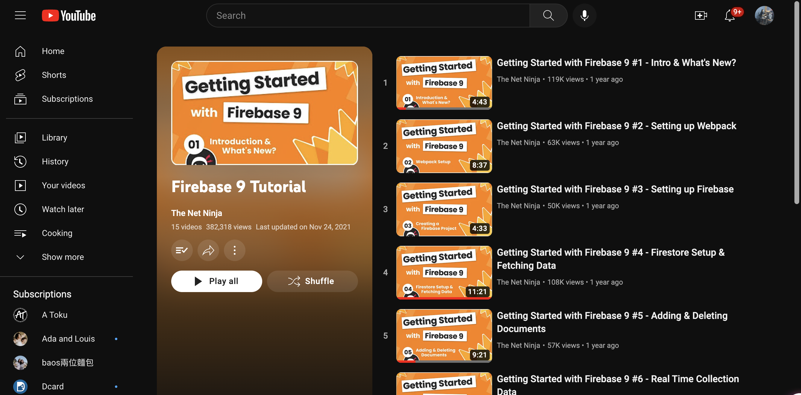
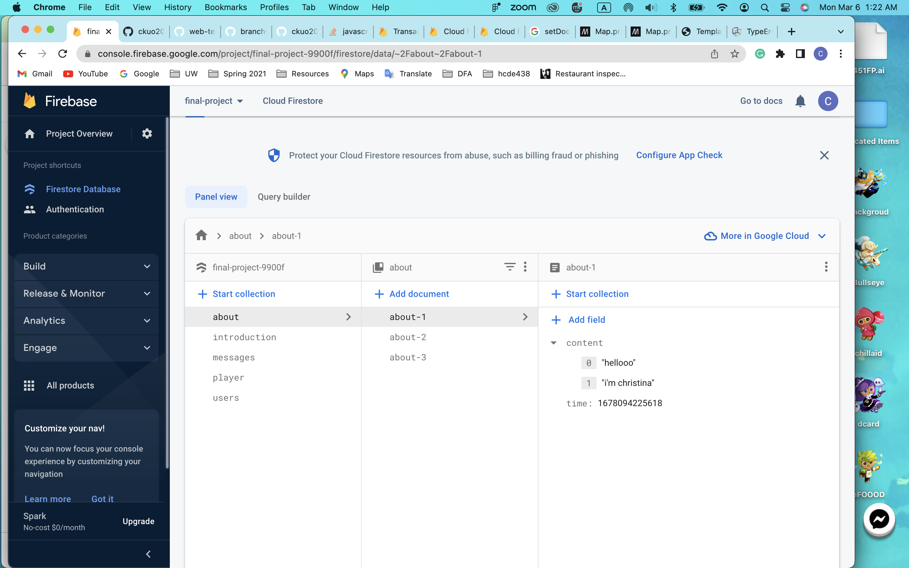
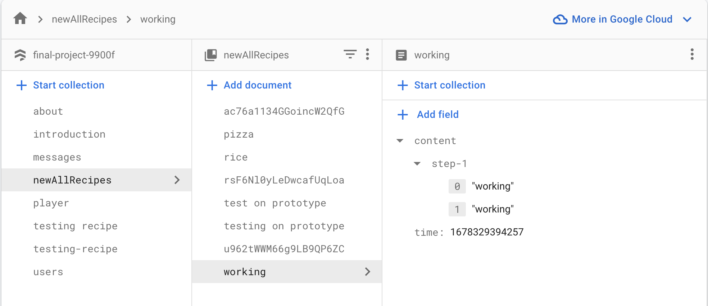

The project will be a food blog website that comes with a backend platform for the blog owner to upload their blog content to update their blog page.
The image below is the overall user flow of this website.
The main page/landing page will be the user's food blog page which includes their introduction. All the recipes will be shown in a table view on another page. By clicking on the individual block, the user will be taken to the individual recipe page that contains the steps to make the dish. To edit the recipes or the introduction, the user will need to log in to the backend management page to edit their blog post.
I decided to use the template for the final project to start working on my website. I first edited some parts in the index.html file. So index.html would be ready when index.js was built.
Next, I started to work on index.js and Firebase. As I needed a place to store all the contents from the user input, I learned how to use Firebase by reviewing the in-class activity. I also watched some Youtube tutorials about Firebase.
I followed the in-class activity step-by-step with the video tutorial on the side. And I got to make the user input in plain text form to be stored in Firebase.
Then, I tried to send some more complex formats of data to Firebase. For example, I planned to use Map as the data format for the recipe contents. However, Firebase required a converter to convert Map into Object, or the data would never be sent to the database. To solve this problem, I searched online for related information on what a converter is and how to use it. Trying a lot of ways, I finally got to send Map into my Firebase.
In addition to learning to transform Map into an Object, I also spent some additional time thinking about my database structure. I tried to format it in different ways and I found the easiest way is to separate the data by pages, which took me a few hours. For example, all the introduction contents were grouped and stored in one collection in Firebase while all the recipes were in the collection called all-recipes. By separating them, I found it was easier to find the data I needed. However, this process also took me a few hours to figure out how to set up a collection and name the document ID.
After sending in my data to Firebase, I started working on getting the data out from Firebase using Javascript in my index.js. Getting the data was not complicated, except for figuring out how to loop through the object data type. The output from the Firebase was Object type instead of Map, so I had to search up the related function to get the text that I needed on my website by looping in the Object. By looking up the MDN page for Object, I used keys() and values() to get all the keys and values. Then, I successfully used a for loop to loop through the content and put it on my HTML pages.
An error happened when I deployed my prototype. The site showed a 404 error when I tried to navigate to my other sub-pages from the main landing page of my website.
The error was caused by the missing file - vite.config.js. I did not include the file in my folder at first, so the files other than my index.html and index.js were all not included in my dist folder. That is why I could not navigate to the other pages once I deployed it.
I googled and tried most of the ways online to solve this problem. I also looked up vite's official website to see if there are any ways to fix it. I learned that this problem was because I did not configure my files correctly. So I read over the documents related to configuration on vite's website to find the solution. Fortunately, I found the correct way to structure my vite.config.js.
Finally, my site was running successfully!